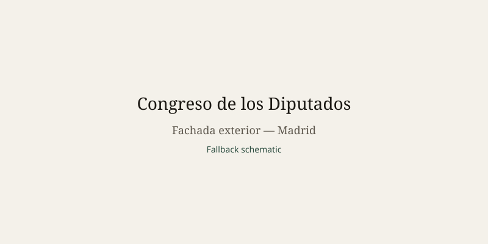

España · elecciones · 24 de octubre de 2026
Feijóo reiteró su disposición a gobernar con Vox y a revisar las leyes de aborto y eutanasia si el PP gana las elecciones del 29 de noviembre.
_17.jpg)
Lo que coinciden las redacciones
El 5 de octubre de 2026 el presidente del Gobierno, Pedro Sánchez, anunció la disolución de las Cortes y la convocatoria de elecciones generales para el domingo 29 de noviembre. El real decreto correspondiente se publicó en el BOE. La decisión siguió a la derrota parlamentaria de dos decretos de emergencia sobre vivienda. Las encuestas publicadas desde entonces sitúan al Partido Popular (PP) por delante del PSOE y proyectan que PP y Vox juntos superarían los 176 escaños necesarios para la mayoría absoluta en el Congreso de los Diputados de 350 escaños.
El 23 de octubre Alberto Núñez Feijóo, líder del PP, declaró en una entrevista en Cadena SER que no descartaba gobernar con Vox si los resultados lo exigían. Dijo que su objetivo principal era sacar a Sánchez del gobierno y abrir un nuevo capítulo. Añadió que revisaría la ley del aborto para involucrar a los tutores legales en el caso de menores de 16 años y que revisaría la ley de eutanasia. También se comprometió a casi duplicar la construcción de viviendas hasta 200.000 unidades al año. POLITICO, Reuters, El Español y otros medios registraron estas declaraciones.
El PSOE, por su parte, ha centrado parte de la campaña en el derecho al aborto y en advertencias sobre la llegada de la extrema derecha. La campaña oficial se desarrolla del 13 al 27 de noviembre. El nuevo Congreso se constituirá el 23 de diciembre; Sánchez permanece como presidente en funciones hasta que se invista a un sucesor.
Lo que es solo una cita
La afirmación de Feijóo de que “si me dicen que dé estabilidad con Vox, lo haré” es una declaración de intención condicionada a los resultados. Las proyecciones de escaños son estimaciones de encuestas, no el recuento. Las promesas de revisar el aborto o la eutanasia son programas de gobierno, no hechos consumados. Las acusaciones mutuas de corrupción o de “fascismo” son retórica de campaña. Ningún medio ha publicado un acuerdo formal de coalición PP-Vox; Feijóo dijo que no había mantenido conversaciones formales sobre la distribución de ministerios.
Mecanismo que el lector necesita
El sistema electoral español es proporcional por circunscripciones provinciales con la fórmula D’Hondt y un umbral efectivo que favorece a los partidos grandes. El Congreso tiene 350 escaños; la mayoría absoluta es 176. El Senado se renueva parcialmente. Después de la votación, el rey propone un candidato a la investidura. Si no obtiene mayoría absoluta en primera votación o mayoría simple en segunda, se pueden realizar más rondas hasta que, a los dos meses, se convoquen nuevas elecciones. Un resultado en el que PP y Vox sumen 176 o más escaños permitiría una investidura sin necesidad de otros socios. Un resultado más fragmentado abriría negociaciones con partidos nacionalistas o regionales.
La vivienda ha sido el tema que precipitó la convocatoria. Protestas nacionales y la muerte de una inquilina de 87 años en Madrid tras un desahucio aumentaron la visibilidad del problema. Tanto el PP como el PSOE han presentado planes de construcción de vivienda; la diferencia radica en el ritmo, los controles de alquiler y el papel del sector público. Los votantes decidirán el 29 de noviembre qué combinación de esas propuestas obtiene mayoría parlamentaria.
Feijóo gobernó Galicia durante cuatro legislaturas consecutivas antes de pasar a la dirección nacional del PP en 2022. Sánchez lleva en el cargo desde 2018 y no ha ganado nunca una mayoría absoluta en el Congreso. Esa trayectoria es el contexto en el que se interpreta la convocatoria anticipada.
Lo que esta historia no es
No es el resultado de las elecciones. No es un pacto de coalición firmado. No es una fotografía de ningún acto de campaña. La imagen superior es una fotografía de tipo de la fachada del Congreso de los Diputados.

Artículos fuente y puntuaciones
| Medio | Titular | T | N | C |
|---|---|---|---|---|
| POLITICO | Feijóo vows conservative overhaul if he wins Spain’s Nov. 29 election | 94 | +5 | 98 |
| Reuters | Spain's November snap election — what you need to know | 96 | 0 | 100 |
| La Moncloa | Pedro Sánchez announces the calling of general elections for November 29th | 98 | +10 | 80 |
| El Español | Feijóo promete que Sánchez, ZP, Leire y Ábalos pagarán por sus actos | 85 | +25 | 70 |
Imágenes: fotografía de tipo de Wikimedia Commons de la fachada del Congreso vinculada vía Special:FilePath. El pie indica que no es el acto. onerror recurre al SVG comprometido. Sin atributo CORS.